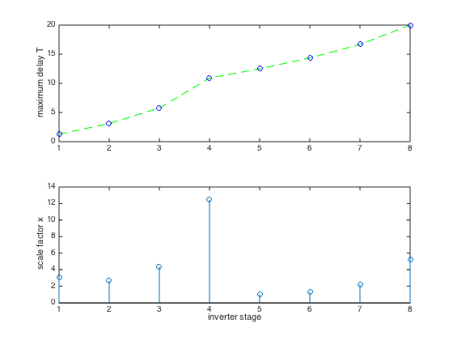

% Boyd, Kim, Patil, and Horowitz, "Digital circuit optimization % via geometric programming" % Written for CVX by Almir Mutapcic 02/08/06 % % We consider a chain of N inverters driving a load capacitance CL. % The problem is to find optimal scale factors for the inverter % that minimize the sum of them (area), while obeying constraints % on the maximum delay through the circuit, and minimum and maximum % limits on scale factors. There are no limits on the total power. % (For more details about the inverter chain see sec. 2.1.11 in the paper.) % % minimize sum(x) % s.t. T_j <= Dmax for j an output gate % T_j + d_i <= T_i for j in FI(i) % x_min <= x <= x_max % % where variables are x and T. % Here we use data structures and digital circuit models from the % referenced paper. %******************************************************************** % problem data %******************************************************************** N = 8; % number of inverters CL = 20; % capacitance load Dmax = 20; % maximum delay through the circuit x_min = 1; % minimum scale factor x_max = 20; % maximum scale factor % circuit labeling convention: % label primary input (input to the first inverter in the chain) with N+1 % label primary output (output of the last inverter in the chain) with N+2 % label inverters in the chain with 1,2,...,N based on their location % primary input and primary output labels (start with N+1) primary_inputs = [N+1]; primary_outputs = [N+2]; M = N + length( primary_inputs ) + length( primary_outputs ); % fan-in cell array for a straight chain of inverters FI{1} = [N+1]; % fan-in of the first inverter is the primary input for k = 2:N FI{k} = [k-1]; % fan-in of other inverters is the inverter feeding into them end FI{N+2} = [N]; % fan-in of the primary output is the last inverter in the chain % fan-out cell array % (will be computed from the fan-in cell array, no need to modify) FO = cell(M,1); for gate = [1:N primary_outputs] preds = FI{gate}; for k = 1:length(preds) FO{preds(k)}(end+1) = gate; end end % input and internal capacitance of gates and the driving resistance Cin_norm = ones(N,1); Cint_norm = ones(N,1); Rdrv_norm = ones(N,1); % place extra capacitance before the input of the 5th inverter Cin_norm(5) = 80; % primary output has Cin capacitance (but has no Cload) Cin_po = sparse(M,1); Cin_po(primary_outputs) = CL; % primary input has Cload capacitance (but has no Cin) Cload_pi = sparse(M,1); Cload_pi(primary_inputs) = 1; %******************************************************************** % optimization %******************************************************************** cvx_begin gp % optimization variables variable x(N) % sizes variable T(N) % arrival times % minimize the sum of scale factors subject to above constraints minimize( sum(x) ) subject to % input capacitance is an affine function of sizes Cin = Cin_norm.*x; Cint = Cint_norm.*x; % driving resistance is inversily proportional to sizes R = Rdrv_norm./x; % gate delay is the product of its driving resistance and load cap. Cload = cvx( zeros(N,1) ); for gate = 1:N if ~ismember( FO{gate}, primary_outputs ) Cload(gate) = sum( Cin(FO{gate}) ); else Cload(gate) = Cin_po( FO{gate} ); end end % delay D = 0.69*ones(N,1).*R.*( Cint + Cload ); % create timing constraints for gate = 1:N if ~ismember( FI{gate}, primary_inputs ) for j = FI{gate} % enforce T_j + D_j <= T_i over all gates j that drive i D(gate) + T(j) <= T(gate); end else % enforce D_i <= T_i for gates i connected to primary inputs D(gate) <= T(gate); end end % circuit delay is the max of arrival times for output gates output_gates = [FI{primary_outputs}]; circuit_delay = max( T(output_gates) ); % collect all the constraints circuit_delay <= Dmax; x_min <= x <= x_max; cvx_end % message about extra capacitance and result display disp(' ') disp(['Note: there is an extra capacitance between the 4th and 5th inverter'... ' in the chain.']) fprintf(1,'\nOptimal scale factors are: \n'), x % plot scale factors and maximum delay for inverter i close all; subplot(2,1,1); plot([1:N],T,'g--',[1:N],T,'bo'); ylabel('maximum delay T') subplot(2,1,2); stem([1:N],x); ylabel('scale factor x') xlabel('inverter stage')
Successive approximation method to be employed.
For improved efficiency, SDPT3 is solving the dual problem.
SDPT3 will be called several times to refine the solution.
Original size: 154 variables, 69 equality constraints
38 exponentials add 304 variables, 190 equality constraints
-----------------------------------------------------------------
Cones | Errors |
Mov/Act | Centering Exp cone Poly cone | Status
--------+---------------------------------+---------
30/ 30 | 3.446e+00 6.441e-01 0.000e+00 | Unbounded
38/ 38 | 5.254e+00 1.528e+00 0.000e+00 | Solved
37/ 37 | 8.561e-01 5.489e-02 0.000e+00 | Solved
33/ 36 | 5.194e-02 1.829e-04 0.000e+00 | Solved
12/ 26 | 4.425e-03 1.328e-06 0.000e+00 | Solved
0/ 3 | 4.428e-04 1.214e-08 0.000e+00 | Solved
-----------------------------------------------------------------
Status: Solved
Optimal value (cvx_optval): +32.2496
Note: there is an extra capacitance between the 4th and 5th inverter in the chain.
Optimal scale factors are:
x =
3.0461
2.6553
4.3323
12.4395
1.0000
1.3185
2.2358
5.2220
